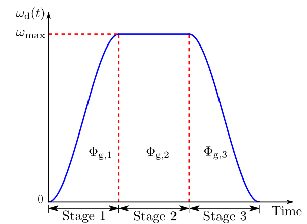
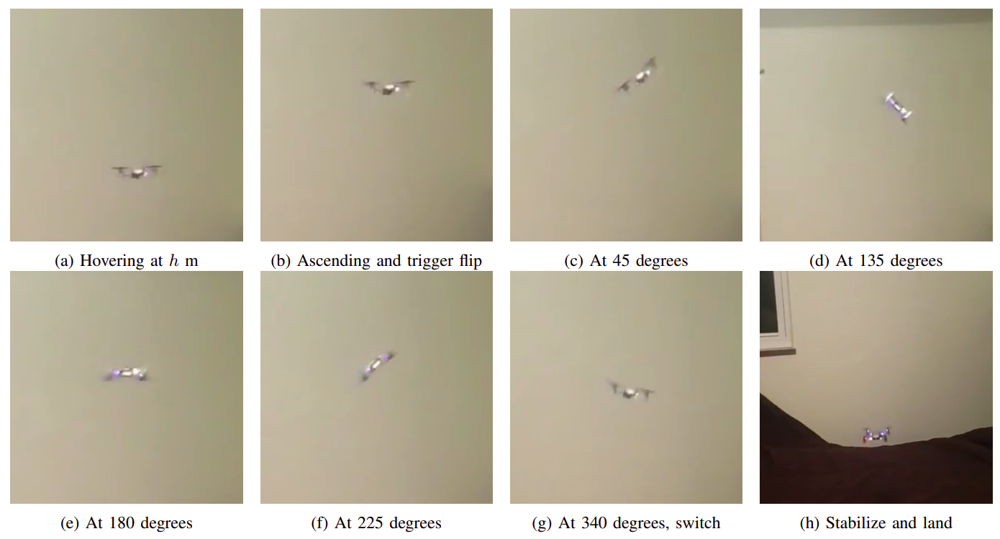

Led a team to derive an autonomous multi-flip pipeline for nano-quadrotors and successfully verified it in simulation.
Introduced a new LQR controller onto Crazyflie (C/C++ on STM32); accomplished robust hovering performance.
Implemented flip planner, flip controller and re-stabilizing controller; delivered single-flip maneuver with Crazyflie.
Abstract---Drones are popular due to their ability to take off and land vertically, high maneuverability, and hovering capability. However, they are highly unstable and susceptible to external disturbances. In this project, we examine flip maneuver which exploits the quadrotor's agility while maintaining stability simultaneously. The flipping pipeline consists of three main modules: trajectory planner, tracking controller and stabilizing controller. A smooth three-stage flipping rate profile is generated in account for the limited sensing and actuating capabilities of the micro quadrotor. A PD controller is used for executing the rapid trajectory for the flip, then switched to a cascaded PID to re-stabilize the quadrotor during normal flight. Beside, a full-state feedback LQR controller is designed to test with the stabilization phase. These modules provide the drone with an ability to perform autonomous flip. Simulation and experimental tests on a Crazyflie quadrotor are successful. However, hardware performance is not consistent and in need of further works.
For more details, please check our report.
Left: LQR hovering Right: Autonomous flip
Introduction
Aggressive maneuvers for drones have been a topic studied for a long time. The limited computing power and sensor
inputs for a quadrotor make the task challenging and interesting. These were achieved mainly using classical controls
and recent learning-based methods. Previous work
[html]
aims to perform single and multiple flips on a Crazyflie using two controllers and a time-dependent trajectory. They employ a cascaded PID controller for normal operations like hovering while it uses a PD-like controller while performing the flip. The trajectory function gives the angular velocities about the flipping axis based on the time inputted. The angular velocities across non-flipping axes are zeros. So the flipping controller takes the three angular velocities and their derivatives as input. The paper provided a simple yet powerful technique for drone flipping, but the parameters for trajectory and controllers in the entire paper were based on Crazyflie 1.0. This work is chosen as our base reference to develop a novel flipping pipeline in Crazyflie 2.1.
Controller Design
This section is split into 3 main parts -- flipping trajectory planner, stabilizing controller design, and flipping controller design. The overall control architecture is designed to switch between the two controllers based on the time and reference trajectory. We plan to use the LQR controller during the normal flight and stabilization phase and the flipping controller during the flip stages of the trajectory.
Flipping Trajectory Planner
First, reference trajectory is defined to represent a flip in mathematical form. This is the reference trajectory the
controllers need to track to perform the flip. The design of the trajectory needs to factor in the dynamics of the drone and the limitations of the hardware as well. The flip trajectory is defined in the form of angular speeds instead of angles. This has two benefits; namely, the trajectory can be designed to better account for the actuating limits of the drone, and also lower chances of stall.
We split the complex maneuver of flip into five stages to for easier representation in mathematical forms and switch between them based on time. The primary three middle planning stages can be seen in the figure below.

Generalized flipping speed reference in previous work
The flipping planner outputs a trajectory for the quadrotor
to follow. This is divided into five stages as follows:
Ascent phase: Here the quadrotor is boosted to obtain
moments and inertia before executing the flip.
Increasing angular velocity phase: In this stage, the roll
rate slowly increases from 0 to ωmax.
Max angular velocity phase: At this stage the ωmax is
commanded.
Decreasing angular velocity phase: In this stage, the roll
rate decreases from ωmax to 0.
Stabilizing phase: This phase is activated after a complete
flip. The quadrotor is stabilized and enters normal flight
mode
Flipping Controller
Following the previous work, a
PD-like controller
is designed for tracking the angular velocity from the planner.
$$
u(t) = k_p e(t) + k_d \dot{e}(t)
$$
The PD controller can be tuned to obtain a desired behavior from the controller by varying the $$k_p$$ and $$k_d$$ terms. This controller provides the control efforts in the form of three torques, and a thrust is set as the drone’s weight to maintain a constant height and not to saturate the actuators.
Stabilizing Controller
An LQR controller is designed to re-stabilize the drone after a complete flip. It is noteworthy that we require a robust controller because initial errors for this controller can be significant. LQR controller is a full-state feedback controller and is designed using the linearized mathematical model of the quadrotor. An optimization problem is solved to obtain the gains of the LQR controller. The LQR controller is tuned by varying the $$Q$$ and $$R$$ matrices to get the desired performance from the controller.
Results
There are several testing cases for flipping maneuvers depending on open-loop vs. closed-loop planner, not tuned vs.
tuned attitude rate PID, and PID vs. LQR stabilizer. Single flip is tested first with detailed analysis before moving to the more challenging cases. Please see our report for more details.

Snapshots of our flipping maneuver from the demo video
Conclusions
This work has provided a complete flipping maneuver
pipeline which is very challenging for a micro quadrotor’s
acrobatic application. Our approach divides the process into
three steps: ascent, flipping and re-stabilization. Following
that, we developed a flipping planner, a flipping controller,
and a stabilizing controller. An open-loop flipping planner
will generate a three-stage attitude rate reference based on
time, compared to the generalized flipping angle feedback of
a closed-loop one. This planner must consider the limited
sensing and actuating capacity of the quadrotor. To track
that reference, we use a flipping controller, which has a PD-like architecture, then switch to a regular controller after
completing a flip. For that re-stabilization phase, both cascaded
PID and LQR controllers are considered. These modules are
implemented via Python API as well as directly Crazyflie
firmware. Finally, this paper has detailed experimental testing
and demonstrated successful flip maneuvers. However, the
majority of the tests witness failures due to many different
factors, including communication delay, open-loop drawbacks,
and not-robust-enough LQR controllers.
Many modifications to the current pipeline can be made to
improve the performance in the future. Firstly, the closed-loop
planner, which needs more integration tests, has provided the
stabilizing controller with good initial conditions. Secondly,
all modules should be directly implemented in the on-board
microprocessor, which will significantly help with the delay problem. Last but not least, more accurate state measurements
and different architectures can boost the LQR stabilizer’s
robustness and overall performance.